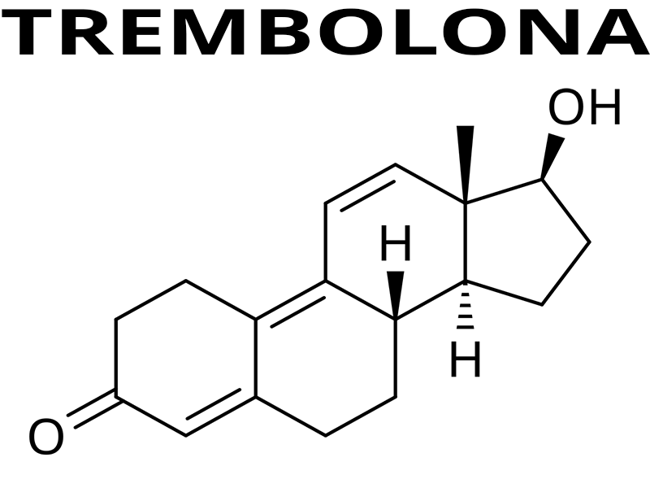

La trembolona es un esteroide anabólico androgénico sintético derivado estructuralmente de la nandrolona, perteneciente a la familia de los esteroides anabólicos derivados de la testosterona. Es reconocida por ser una de las sustancias más potentes dentro de este grupo debido a su fuerte afinidad por los receptores androgénicos y su intensa capacidad para alterar procesos metabólicos relacionados con la síntesis proteica, la retención de nitrógeno y la recomposición corporal.
A diferencia de la testosterona, la trembolona no es una hormona producida naturalmente por el cuerpo humano. Se trata de una sustancia completamente sintética, diseñada originalmente para uso veterinario, especialmente en la industria ganadera, con el objetivo de aumentar la eficiencia alimenticia, mejorar la retención de masa magra y acelerar el crecimiento muscular en animales de producción.
Su uso veterinario fue el contexto principal de desarrollo de esta sustancia, y en la mayoría de países no está aprobada para uso médico humano. A pesar de esto, con el paso del tiempo comenzó a utilizarse de forma no autorizada en ámbitos de culturismo y deporte debido a sus efectos extremadamente potentes sobre la masa muscular, la fuerza y la composición corporal.
Dentro del ámbito del fitness, la trembolona ganó una reputación particular por su capacidad para generar cambios físicos rápidos y visibles, especialmente en etapas de definición muscular y recomposición corporal. Su popularidad se debe a que permite mantener o aumentar masa muscular incluso en contextos de restricción calórica, algo que la diferencia de muchas otras sustancias.
A nivel farmacológico, la trembolona comparte ciertas características con la testosterona, como su acción sobre los receptores androgénicos, pero presenta diferencias importantes en su comportamiento metabólico y en la intensidad de sus efectos. Su potencia anabólica y androgénica es considerablemente superior, lo que explica tanto sus resultados como la severidad de sus efectos secundarios.
La trembolona suele presentarse unida a diferentes ésteres, principalmente acetato y enantato, que modifican la velocidad de liberación y duración en el organismo. Estas variantes no cambian la sustancia base, sino la forma en que se absorbe y mantiene activa en sangre.
Una característica importante de la trembolona es que no aromatiza de manera significativa a estrógeno, a diferencia de la testosterona. Esto significa que ciertos efectos asociados a la conversión estrogénica pueden reducirse, aunque esto no elimina otros riesgos hormonales importantes.
Sin embargo, su enorme potencia también implica un perfil de riesgo mucho más agresivo. Alteraciones cardiovasculares, supresión hormonal severa, problemas de sueño, cambios psicológicos y efectos sistémicos importantes forman parte de los riesgos asociados a su uso.
Comprender qué es la trembolona y cuál es su origen es fundamental antes de analizar su funcionamiento, sus efectos fisiológicos y sus riesgos. Más allá de su fama dentro del culturismo, sigue siendo una sustancia de alto impacto biológico cuyo uso implica consecuencias significativas sobre la salud.
Nombre químico: Trembolona
Tipo: Esteroide anabólico androgénico
Familia: Derivado de la nandrolona (19-nor)
Origen: Compuesto sintético
Fórmula molecular: C18H22O2
Derivado de: Nandrolona
Vía de administración: Inyectable
Uso clínico original: Uso veterinario (desarrollo de masa en ganado)
Estado legal: Sustancia altamente regulada
Clasificación deportiva: Sustancia prohibida en competición
Aromatización: No
Actividad progestagénica: Sí
Conversión a DHT: No
Hepatotoxicidad: No (inyectable)
Retención hídrica: Muy baja
Supresión hormonal: Muy alta
Impacto cardiovascular: Alto
Impacto renal: Moderado a alto
Potencia anabólica: Muy alta
Potencia androgénica: Alta

La trembolona es uno de los esteroides anabólicos más potentes y agresivos, reconocida por su fuerte impacto sobre la fuerza, la recomposición corporal y la dureza muscular, pero también por su alto perfil de efectos secundarios.
La trembolona actúa principalmente uniéndose a los receptores androgénicos dentro de las células musculares y otros tejidos. Su afinidad por estos receptores es considerablemente alta, lo que la convierte en una de las sustancias anabólicas más potentes dentro de su categoría. Una vez que la molécula se une al receptor, se activa una cascada de señales celulares que modifica la expresión genética y favorece procesos de crecimiento, reparación y adaptación muscular.
Este mecanismo de acción crea un entorno altamente anabólico, donde el cuerpo incrementa su capacidad de construir tejido muscular, conservar masa magra y recuperarse de forma más eficiente frente al estrés físico.
Uno de los principales efectos de la trembolona es el aumento de la síntesis proteica. Esto significa que el organismo mejora su capacidad para utilizar aminoácidos y construir nuevas proteínas musculares, acelerando los procesos de reparación y crecimiento tras el entrenamiento.
Además, la trembolona incrementa la retención de nitrógeno en el músculo. Mantener un balance positivo de nitrógeno es esencial para sostener un entorno favorable para la hipertrofia muscular, ya que el tejido muscular depende de este elemento para su mantenimiento y crecimiento.
Otro efecto importante es la reducción del catabolismo muscular. La trembolona puede disminuir la acción de hormonas catabólicas como el cortisol, ayudando a preservar masa muscular incluso en contextos de déficit calórico o entrenamiento intenso.
También se ha observado una mejora en la eficiencia de utilización de nutrientes, lo que significa que el cuerpo puede aprovechar mejor proteínas, carbohidratos y grasas para procesos de recuperación y desarrollo muscular.
Además de su fuerte actividad anabólica, la trembolona posee una actividad androgénica elevada. Esto implica efectos importantes sobre características sexuales secundarias y otros tejidos sensibles a andrógenos.
Entre estos efectos pueden encontrarse aumento de producción sebácea, acné, aceleración de caída del cabello en personas predispuestas genéticamente y posibles cambios en la libido.
Debido a su fuerte interacción con receptores androgénicos, estos efectos suelen ser más intensos que los observados con compuestos más suaves.
Una característica importante de la trembolona es que no aromatiza de forma significativa a estrógeno. A diferencia de la testosterona, no genera elevaciones estrogénicas directas por conversión enzimática.
Esto significa que ciertos efectos relacionados con estrógeno, como retención hídrica marcada, suelen ser menores. Sin embargo, esto no elimina otros riesgos hormonales, ya que pueden existir otros mecanismos indirectos de desequilibrio hormonal.
La trembolona es especialmente conocida por su fuerte impacto sobre la recomposición corporal. Esto significa que puede favorecer simultáneamente el mantenimiento o aumento de masa muscular mientras se reduce tejido adiposo.
Este efecto se relaciona con su fuerte actividad anabólica, su capacidad anticatabólica y una aparente mejora en la partición de nutrientes, dirigiendo más recursos hacia tejido muscular en lugar de almacenamiento graso.
Por este motivo, suele asociarse con físicos más densos, duros y definidos en comparación con otros compuestos que generan mayor retención de líquidos.
La trembolona suele encontrarse unida a distintos ésteres que modifican la velocidad de liberación y duración de acción. Los más conocidos son acetato y enantato.
El acetato tiene una vida media más corta y una liberación rápida, permitiendo alcanzar niveles activos en menos tiempo. Esto también implica una eliminación más rápida si se interrumpe su uso.
El enantato posee una liberación más lenta y una duración mayor, permitiendo mantener niveles más estables por períodos más prolongados.
Aunque el éster modifica la farmacocinética, los efectos fisiológicos de la trembolona base siguen siendo esencialmente los mismos.
Comprender el mecanismo de acción de la trembolona permite entender por qué es considerada una de las sustancias más potentes dentro del ámbito anabólico. Su capacidad para potenciar crecimiento muscular, preservar masa magra y alterar la composición corporal es extremadamente fuerte, pero también lo es su capacidad de generar efectos secundarios y estrés sistémico.
La trembolona es considerada una de las sustancias anabólicas más potentes, pero también una de las más agresivas en términos de efectos secundarios. Su alta potencia anabólica y androgénica implica un impacto sistémico importante sobre múltiples órganos y sistemas del cuerpo. Aunque sus resultados físicos pueden ser notorios, su perfil de riesgo es considerablemente más severo que el de compuestos más básicos como la testosterona.
A diferencia de otros esteroides, la trembolona suele generar efectos secundarios intensos incluso en períodos relativamente cortos de uso, especialmente cuando se utiliza en dosis elevadas o sin supervisión médica.
Uno de los principales efectos del uso de trembolona es la supresión profunda de la producción natural de testosterona. El eje hormonal interpreta la presencia de andrógenos exógenos y reduce drásticamente su producción endógena.
Esta supresión puede afectar libido, fertilidad y equilibrio hormonal general, además de generar una recuperación hormonal más compleja tras la suspensión.
En muchos casos, la recuperación completa del eje puede tardar largos períodos y depender de múltiples factores individuales.
La trembolona puede generar un impacto importante sobre la salud cardiovascular. Es común observar alteraciones negativas en el perfil lipídico, incluyendo disminución del colesterol HDL y aumento del LDL.
Estas alteraciones aumentan el riesgo de enfermedad cardiovascular, especialmente cuando se combinan con otros factores como dieta deficiente, predisposición genética o uso prolongado.
También puede elevar la presión arterial y aumentar la carga sobre el sistema circulatorio.
Uno de los efectos más reportados de la trembolona es su impacto psicológico. Algunas personas experimentan irritabilidad, cambios bruscos de humor, ansiedad o aumento de impulsividad.
También se reportan alteraciones del sueño, insomnio y sensación de hiperactivación mental, lo que puede afectar recuperación, estado de ánimo y calidad de vida.
La intensidad de estos efectos puede variar ampliamente entre individuos.
Debido a su fuerte actividad androgénica, la trembolona puede aumentar la producción de sebo y favorecer la aparición de acné, especialmente en personas predispuestas.
También puede acelerar la caída del cabello en individuos con predisposición genética a la alopecia androgenética.
En algunos casos se observan aumentos en la sudoración, especialmente nocturna, y cambios en la tolerancia al calor.
Aunque no se considera un compuesto altamente hepatotóxico como ciertos esteroides orales, la trembolona puede generar estrés sistémico importante debido a su intensidad metabólica.
El uso prolongado o combinado con otras sustancias puede aumentar la carga sobre hígado, riñones y sistema cardiovascular, especialmente en ausencia de monitoreo clínico.
También puede influir negativamente sobre marcadores inflamatorios y recuperación general del organismo.
Muchas personas reportan alteraciones importantes del sueño durante el uso de trembolona. Esto incluye dificultad para conciliar el sueño, despertares frecuentes y sueño menos reparador.
La falta de descanso adecuado puede comprometer recuperación muscular, función cognitiva, estado hormonal y salud general.
Esto resulta especialmente relevante porque una parte importante del crecimiento muscular y recuperación depende del descanso profundo.
Dada la intensidad de sus efectos, cualquier uso de trembolona implica riesgos importantes y requiere conocimiento profundo de su impacto fisiológico. El monitoreo de parámetros hormonales, cardiovasculares y orgánicos es fundamental en contextos médicos.
Comprender los riesgos de la trembolona es esencial para tener una visión completa de la sustancia. Su potencia puede ofrecer cambios físicos rápidos, pero esos resultados vienen acompañados de un costo biológico elevado que no debe subestimarse.
A diferencia de la testosterona, la trembolona no fue desarrollada originalmente para terapia de reemplazo hormonal ni para aplicaciones clínicas humanas. Su origen farmacológico está vinculado principalmente al uso veterinario, especialmente en la industria ganadera, donde fue diseñada para mejorar la eficiencia alimenticia, aumentar la masa muscular magra y optimizar el crecimiento de animales destinados a producción.
Con el paso del tiempo, sus efectos anabólicos extremadamente potentes hicieron que comenzara a utilizarse de manera no autorizada en ámbitos de culturismo y deporte, donde ganó fama por su capacidad para generar cambios físicos rápidos y marcados.
Comprender esta diferencia de contexto es fundamental, ya que la trembolona no posee el mismo historial de uso médico humano que otras sustancias como la testosterona.
En medicina veterinaria, la trembolona fue utilizada para promover crecimiento muscular y mejorar la conversión alimenticia en animales. Esto significa que permitía obtener mayor desarrollo físico con menor cantidad de alimento, optimizando la eficiencia metabólica.
Su aplicación estaba orientada a producción animal y no a tratamientos hormonales humanos. Esto marca una diferencia importante respecto a otras hormonas utilizadas clínicamente en personas.
La formulación y el contexto de uso veterinario responden a objetivos completamente distintos a los del ámbito humano, y esto influye en cómo debe entenderse su perfil farmacológico y de riesgo.
En el ámbito del fitness, la trembolona se popularizó por su capacidad para aumentar masa muscular, preservar tejido magro durante déficit calórico y mejorar la apariencia de densidad y dureza muscular.
Su fuerte impacto sobre recomposición corporal la convirtió en una sustancia especialmente asociada a etapas de definición o preparación competitiva.
A diferencia del uso veterinario, en estos contextos el objetivo principal es modificar composición corporal y rendimiento, no tratar una condición médica.
A diferencia de la testosterona, la trembolona no forma parte de tratamientos médicos habituales para corregir deficiencias hormonales en humanos. No es una herramienta estándar de terapia hormonal humana y su uso fuera del ámbito veterinario se encuentra limitado o no aprobado en muchos lugares.
Esto implica que gran parte de su uso recreativo ocurre fuera de protocolos médicos establecidos y sin validación terapéutica formal.
Mientras que el uso clínico de hormonas como la testosterona suele buscar restaurar equilibrio hormonal y mejorar calidad de vida, el uso recreativo de trembolona generalmente persigue maximizar resultados físicos mediante niveles farmacológicos de estímulo anabólico.
Esta diferencia es importante porque modifica completamente la relación riesgo-beneficio. En contextos terapéuticos, el objetivo es salud; en contextos recreativos, el objetivo suele ser rendimiento o estética.
Debido a su potencia y a la falta de aplicación terapéutica humana estandarizada, el uso recreativo de trembolona suele considerarse de mayor riesgo que otras sustancias más estudiadas en medicina humana.
Sus efectos sobre sistema cardiovascular, sistema nervioso, sueño y equilibrio hormonal pueden ser intensos incluso en períodos relativamente cortos.
Comprender la diferencia entre su origen veterinario y su uso recreativo permite entender mejor por qué la trembolona ocupa un lugar tan particular dentro del mundo de los esteroides anabólicos: es extremadamente efectiva, pero también especialmente agresiva y compleja de manejar.
La trembolona es una sustancia altamente regulada debido a su potente impacto sobre el organismo y su naturaleza como esteroide anabólico androgénico. A diferencia de la testosterona, que posee aplicaciones médicas legítimas en humanos, la trembolona tiene un contexto legal más restrictivo por su origen y finalidad farmacológica.
Comprender su marco legal es importante no solo desde una perspectiva jurídica, sino también sanitaria, ya que gran parte de su circulación fuera del ámbito veterinario ocurre mediante canales informales y no regulados.
En muchos países, la trembolona está restringida al ámbito veterinario y su uso humano no cuenta con aprobación médica generalizada. Esto significa que no forma parte de tratamientos terapéuticos estándar ni de protocolos clínicos habituales para personas.
Debido a esto, su posesión, distribución o comercialización fuera de marcos autorizados puede implicar consecuencias legales según la legislación de cada país.
En el deporte profesional, además, se considera una sustancia prohibida por organismos antidopaje debido a su fuerte capacidad para alterar el rendimiento físico y la composición corporal.
Debido a la falta de disponibilidad legal para uso humano, gran parte de la trembolona utilizada de forma recreativa proviene del mercado negro o de laboratorios clandestinos.
Esto representa un riesgo importante, ya que no existe garantía real sobre pureza, concentración, esterilidad o composición.
Un producto etiquetado como trembolona puede contener dosis diferentes a las indicadas, otras sustancias o contaminantes, lo que aumenta considerablemente los riesgos asociados.
Al tratarse de sustancias inyectables, la esterilidad es un factor crítico. Productos fabricados o manipulados fuera de estándares farmacéuticos pueden contener bacterias, partículas o contaminantes peligrosos.
Esto puede generar infecciones locales, abscesos, inflamación severa o complicaciones sistémicas que requieren intervención médica.
El riesgo no depende solo de la sustancia, sino también de la calidad del producto y de las condiciones en que fue producido.
Uno de los problemas principales del mercado informal es la falta de trazabilidad. Cuando una sustancia se adquiere legalmente dentro de un sistema regulado, es posible verificar origen, laboratorio, lote y estándares de calidad.
En productos clandestinos, esta información suele ser inexistente o falsificada, lo que impide validar su autenticidad.
Esto convierte la adquisición informal en un riesgo adicional independiente de los efectos propios de la trembolona.
El acceso a sustancias potentes sin regulación, sin supervisión médica y sin garantías de calidad incrementa de forma significativa el riesgo de daño. Comprender el contexto legal y sanitario de la trembolona es fundamental para dimensionar correctamente sus implicancias.
La adquisición de cualquier compuesto hormonal no debería reducirse a “conseguirlo”, sino a entender su origen, su calidad, su legalidad y su impacto potencial sobre la salud.
La trembolona es una de las sustancias más potentes dentro del mundo de los esteroides anabólicos, pero también una de las más agresivas en términos de impacto fisiológico y riesgos para la salud. Por esta razón, antes de considerar su uso, es importante entender que existen alternativas más sostenibles y seguras para mejorar la composición corporal, el rendimiento y el desarrollo muscular.
Aunque estas alternativas no producen cambios tan rápidos como la trembolona, sí permiten construir resultados reales, estables y sostenibles en el tiempo, reduciendo significativamente los riesgos físicos y psicológicos asociados.
Uno de los factores más importantes en el desarrollo muscular sigue siendo la calidad del entrenamiento. La progresión de cargas, la correcta selección de ejercicios, el volumen adecuado y la recuperación suficiente son pilares fundamentales para generar hipertrofia y mejoras en fuerza.
Muchas veces, optimizar variables de entrenamiento puede generar avances importantes sin necesidad de recurrir a sustancias de alto riesgo.
La alimentación cumple un papel central en cualquier proceso de cambio físico. Un consumo adecuado de proteínas, carbohidratos y grasas permite sostener rendimiento, recuperación y crecimiento muscular.
Mantener suficiente energía disponible es especialmente importante para construir masa muscular o preservar tejido magro durante etapas de déficit calórico.
Además, una dieta equilibrada aporta vitaminas, minerales y otros nutrientes necesarios para el funcionamiento hormonal y metabólico general.
El descanso es un factor muchas veces subestimado. Gran parte de la recuperación muscular y adaptación al entrenamiento ocurre durante el sueño profundo.
Dormir adecuadamente permite optimizar producción hormonal natural, recuperación del sistema nervioso y regeneración de tejidos.
Sin una recuperación adecuada, incluso el mejor entrenamiento y nutrición pierden efectividad.
Una de las mayores diferencias entre el desarrollo natural y el uso de sustancias potentes como la trembolona es la velocidad. El progreso natural suele ser más lento, pero construye una base sólida y sostenible.
La consistencia en entrenamiento, nutrición y recuperación genera resultados acumulativos que pueden ser muy significativos a largo plazo.
La búsqueda de resultados inmediatos puede llevar a asumir riesgos desproporcionados frente al beneficio buscado.
Dentro del ámbito médico, cuando existe una necesidad hormonal real, suelen utilizarse tratamientos más estudiados y con mayor respaldo clínico, como terapias de reemplazo hormonal bajo supervisión profesional.
Esto marca una diferencia importante respecto al uso de sustancias de alto impacto y menor aplicación clínica humana como la trembolona.
La trembolona puede ofrecer resultados físicos rápidos y potentes, pero esos resultados tienen un costo biológico elevado. Antes de considerar una sustancia de este nivel, es importante evaluar si el objetivo buscado realmente justifica el riesgo.
En la mayoría de los casos, mejorar entrenamiento, alimentación, descanso y constancia puede generar cambios importantes sin comprometer la salud a largo plazo. Priorizar la sostenibilidad y la salud permite construir progreso físico real, estable y más seguro.
La trembolona es una de las sustancias más potentes dentro del mundo de los esteroides anabólicos, pero también una de las más agresivas en términos de impacto fisiológico y riesgos para la salud. Por esta razón, antes de considerar su uso, es importante entender que existen alternativas más sostenibles y seguras para mejorar la composición corporal, el rendimiento y el desarrollo muscular.
Aunque estas alternativas no producen cambios tan rápidos como la trembolona, sí permiten construir resultados reales, estables y sostenibles en el tiempo, reduciendo significativamente los riesgos físicos y psicológicos asociados.
Uno de los factores más importantes en el desarrollo muscular sigue siendo la calidad del entrenamiento. La progresión de cargas, la correcta selección de ejercicios, el volumen adecuado y la recuperación suficiente son pilares fundamentales para generar hipertrofia y mejoras en fuerza.
Muchas veces, optimizar variables de entrenamiento puede generar avances importantes sin necesidad de recurrir a sustancias de alto riesgo.
La alimentación cumple un papel central en cualquier proceso de cambio físico. Un consumo adecuado de proteínas, carbohidratos y grasas permite sostener rendimiento, recuperación y crecimiento muscular.
Mantener suficiente energía disponible es especialmente importante para construir masa muscular o preservar tejido magro durante etapas de déficit calórico.
Además, una dieta equilibrada aporta vitaminas, minerales y otros nutrientes necesarios para el funcionamiento hormonal y metabólico general.
El descanso es un factor muchas veces subestimado. Gran parte de la recuperación muscular y adaptación al entrenamiento ocurre durante el sueño profundo.
Dormir adecuadamente permite optimizar producción hormonal natural, recuperación del sistema nervioso y regeneración de tejidos.
Sin una recuperación adecuada, incluso el mejor entrenamiento y nutrición pierden efectividad.
Una de las mayores diferencias entre el desarrollo natural y el uso de sustancias potentes como la trembolona es la velocidad. El progreso natural suele ser más lento, pero construye una base sólida y sostenible.
La consistencia en entrenamiento, nutrición y recuperación genera resultados acumulativos que pueden ser muy significativos a largo plazo.
La búsqueda de resultados inmediatos puede llevar a asumir riesgos desproporcionados frente al beneficio buscado.
Dentro del ámbito médico, cuando existe una necesidad hormonal real, suelen utilizarse tratamientos más estudiados y con mayor respaldo clínico, como terapias de reemplazo hormonal bajo supervisión profesional.
Esto marca una diferencia importante respecto al uso de sustancias de alto impacto y menor aplicación clínica humana como la trembolona.
La trembolona puede ofrecer resultados físicos rápidos y potentes, pero esos resultados tienen un costo biológico elevado. Antes de considerar una sustancia de este nivel, es importante evaluar si el objetivo buscado realmente justifica el riesgo.
En la mayoría de los casos, mejorar entrenamiento, alimentación, descanso y constancia puede generar cambios importantes sin comprometer la salud a largo plazo. Priorizar la sostenibilidad y la salud permite construir progreso físico real, estable y más seguro.